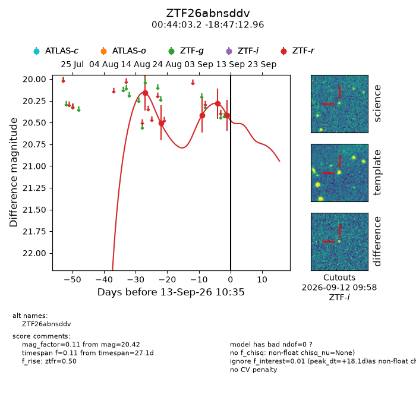
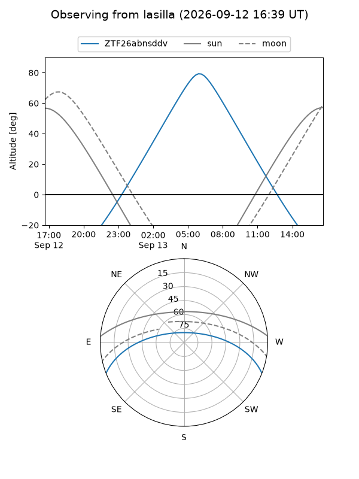
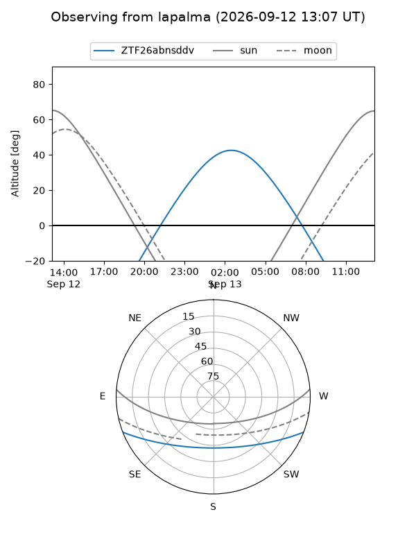
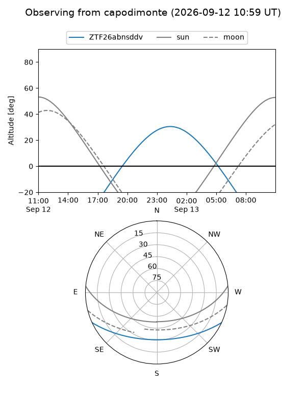
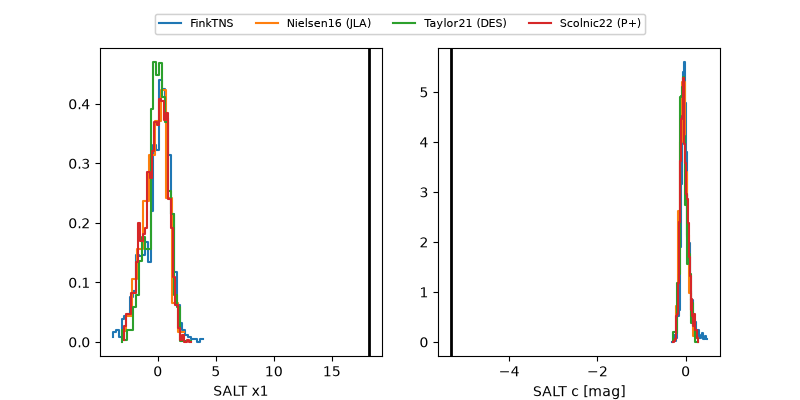

ZTF26abnsddv
Target ZTF26abnsddv at 2026-09-13 10:37
Aliases and brokers:
FINK-ZTF: ztf.fink-portal.org/ZTF26abnsddv
Lasair-ZTF: lasair-ztf.lsst.ac.uk/objects/ZTF26abnsddv
ALeRCE-ZTF: alerce.online/object/ZTF26abnsddv
Direct TNS query: direct search
alt names
ZTF26abnsddv (ztf,fink_ztf)
Coordinates:
equatorial (ra, dec) = 11.0134,-18.78693
equatorial (HMS+DMS) = 00:44:03.22,-18:47:12.96
galactic (l, b) = (111.0416,-81.48770)
Flags:
peak dt: +18.1
Photometry:
last ztfr=20.42
5 ztfr detections
Lightcurve

Visibility



Additional plots
